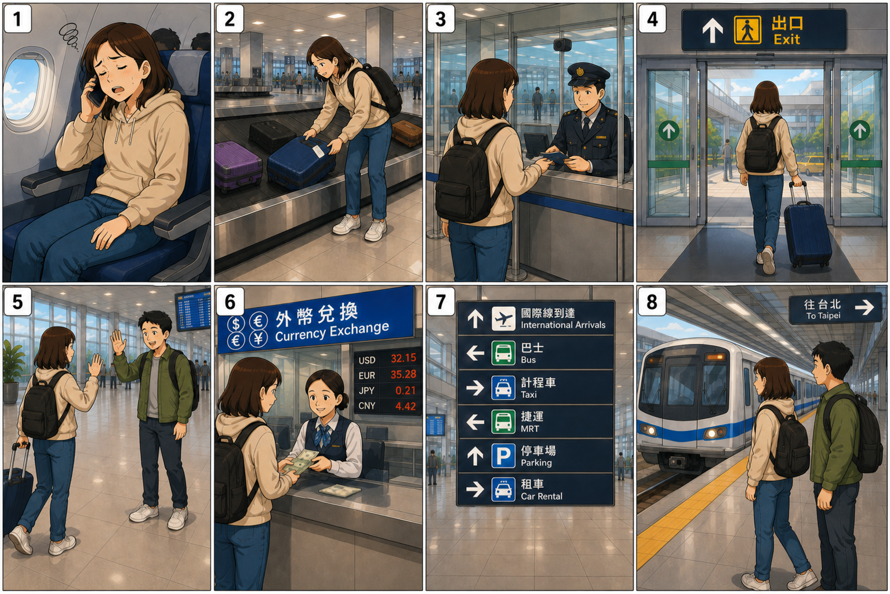

🖼️ 八格漫畫

活動：看圖說一說每一格發生了什麼事。
📘 四個句型
表示程度非常高。
例：我累得不得了。
表示做事情的順序。
例：先拿行李，再找推車。
表示完全不、完全沒有。
例：我一點也看不懂。
表示移動的方向。
例：從這裡往右轉。
📝 詞語｜拼音・注音・英文
🗣️ 八組模擬對話
1. 搭飛機：時差＋程度
A：你怎麼了？看起來很累。
Nǐ zěnme le? Kàn qǐlái hěn lèi.
What's wrong? You look very tired.
B：我累得不得了！而且還有一點時差。
Wǒ lèi de bùdéliǎo! Érqiě hái yǒu yìdiǎn shíchā.
I'm extremely tired! And I still have a little jet lag.
A：你吃東西了嗎？
Nǐ chī dōngxi le ma?
Have you eaten anything?
B：還沒。我現在肚子餓得不得了。
Hái méi. Wǒ xiànzài dùzi è de bùdéliǎo.
Not yet. I'm extremely hungry right now.
2. 拿行李：先……再……
A：你的行李找到了嗎？
Nǐ de xíngli zhǎodào le ma?
Did you find your luggage?
B：找到了，可是這個行李箱重得不得了！
Zhǎodào le, kěshì zhège xínglixiāng zhòng de bùdéliǎo!
Yes, I did, but this suitcase is extremely heavy!
A：那你先拿行李，再找推車吧。
Nà nǐ xiān ná xíngli, zài zhǎo tuīchē ba.
Then take your luggage first, and get a cart afterward.
B：好，我先拿行李，再去找推車。
Hǎo, wǒ xiān ná xíngli, zài qù zhǎo tuīchē.
Okay. I'll get my luggage first, and then find a cart.
3. 入境：請求幫忙
A：請出示護照。你是來臺灣旅遊嗎？
Qǐng chūshì hùzhào. Nǐ shì lái Táiwān lǚyóu ma?
Please show your passport. Are you visiting Taiwan?
B：對，我來臺灣旅遊。
Duì, wǒ lái Táiwān lǚyóu.
Yes, I'm visiting Taiwan.
A：需要我幫你嗎？
Xūyào wǒ bāng nǐ ma?
Do you need me to help you?
B：好，謝謝。這個表格我一點也看不懂。
Hǎo, xièxie. Zhège biǎogé wǒ yìdiǎn yě kàn bù dǒng.
Yes, thank you. I don't understand this form at all.
4. 出境：從……往……
A：出口在哪裡？
Chūkǒu zài nǎlǐ?
Where is the exit?
B：從這裡往前走，就可以看到出口。
Cóng zhèlǐ wǎng qián zǒu, jiù kěyǐ kàn dào chūkǒu.
Walk straight ahead from here, and you'll see the exit.
A：到了出口以後呢？
Dào le chūkǒu yǐhòu ne?
What about after we reach the exit?
B：再從出口往右轉，就可以找到接待的人。
Zài cóng chūkǒu wǎng yòu zhuǎn, jiù kěyǐ zhǎodào jiēdài de rén.
Then turn right from the exit, and you'll find the person who is meeting you.
5. 接待：沒想到＋訂
A：嗨！歡迎來臺灣！
Hāi! Huānyíng lái Táiwān!
Hi! Welcome to Taiwan!
B：謝謝你來接我。沒想到你真的來了！
Xièxie nǐ lái jiē wǒ. Méi xiǎngdào nǐ zhēnde lái le!
Thank you for coming to meet me. I didn't expect you to really come!
A：當然。我幫你訂了旅館。
Dāngrán. Wǒ bāng nǐ dìng le lǚguǎn.
Of course. I booked a hotel for you.
B：太好了，謝謝你這麼細心！
Tài hǎo le, xièxie nǐ zhème xìxīn!
That's great. Thank you for being so thoughtful!
6. 換錢：臺幣
A：你要先換錢嗎？
Nǐ yào xiān huànqián ma?
Do you want to exchange money first?
B：對，我想先換一些臺幣。
Duì, wǒ xiǎng xiān huàn yìxiē Táibì.
Yes, I'd like to exchange some New Taiwan dollars first.
A：換多少？
Huàn duōshǎo?
How much would you like to exchange?
B：先換一點就好，因為到了臺北再看看。
Xiān huàn yìdiǎn jiù hǎo, yīnwèi dào le Táiběi zài kànkan.
Just a little for now. We'll see when we get to Taipei.
7. 看指示牌：往臺北
A：我們要往哪裡走？
Wǒmen yào wǎng nǎlǐ zǒu?
Which way are we going?
B：我們要往臺北。
Wǒmen yào wǎng Táiběi.
We're heading toward Taipei.
A：那從這裡往右轉嗎？
Nà cóng zhèlǐ wǎng yòu zhuǎn ma?
So do we turn right from here?
B：對，然後往捷運的方向走。
Duì, ránhòu wǎng jiéyùn de fāngxiàng zǒu.
Yes, then walk toward the MRT.
8. 搭車：到臺北
A：好了嗎？我們可以走了嗎？
Hǎo le ma? Wǒmen kěyǐ zǒu le ma?
Are you ready? Can we go?
B：好了。先進站，再搭捷運到臺北。
Hǎo le. Xiān jìnzhàn, zài dā jiéyùn dào Táiběi.
Ready. First enter the station, then take the MRT to Taipei.
A：今天累不累？
Jīntiān lèi bù lèi?
Are you tired today?
B：累得不得了，但是我很期待！
Lèi de bùdéliǎo, dànshì wǒ hěn qīdài!
I'm extremely tired, but I'm really looking forward to it!
✏️ 互動練習
1.「我累得不得了」表示：
2. 哪一句表示正確的順序？
3.「從這裡往右轉」表示：
🎤 口說挑戰
選一格漫畫，用至少兩個句型說完整句子。
- 我先……，再……。
- ……得不得了。
- 我一點也不……。
- 從……往……。